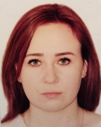

Третяк Ксенія
Персональні дані
- дата народження – 07.05.1992 г.;
- місце проживання: м. Харків;
- номер телефона – 099 371 59 16;
- E-mail – ksenia.romanovna92@gmail.com
-
My Facebook
Досвід роботи:
03.2019 р. – теперішній час – «Максі Груп Інтернешнл» - аналітик з
інвестицій.
Обов'язки:
- аналіз обсягу продажів, формування звітності
- зведення фінансового результату компанії
-
підготовка та розробка нових регулярних та специфічних аналітичних
звітів
09.2017 р. – 02.2019 р. – «Максі Маркетинг» - менеджер з персоналу.
Обов'язки:
- пошук персоналу у відділ продажів та віддалених працівників;
- проведення співбесід;
- навчання віддалених працівників;
- формування особистих справ працівників;
-
складання звітності для бухгалтерії, відділу кадрів та відділу
аналітики.
07.2016 р. – 08.2017 р. – Академія успішних продаж - менеджер по роботі з
клієнтами.
Обов’язки:
- проведення співбесід по скайпу;
- навчання віддалених менеджерів продукту та основам продажу;
- контроль роботи віддалених менеджерів;
- допомога бізнес-тренерам в проведенні тренінгів;
- робота з клієнтською базою в CRM-системі;
- розширення бази клієнтів через холодні дзвінки;
- ведення переговорів з клієнтами;
- побудова довгострокових відносин з клієнтами;
- складання звітності.
Освіта:
2009 р. – 2013 р. – СНУ ім. В. Даля. Спеціальність – прикладна статистика. Освітньо-кваліфікаційний рівень – бакалавр
2013 р. – 2014 р. – СНУ ім. В. Даля. Спеціальність – інтелектуальна власність. Освітньо-кваліфікаційний – магістр.